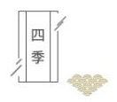
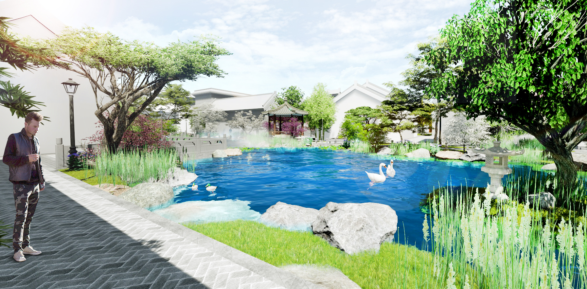

美成在久·中国院子建筑集锦
2019-02-18 来源：信网 作者：杜杲燃 责任编辑：亚麦
中国院子坐落于青岛市西海岸新区唐岛湾国家湿地公园核心区域。自2011年底筹划，55栋明清古建筑营造了一座中式休闲园林，集生态自然资源和历史人文积淀于一体，曲径通幽如世外桃源。
图片介绍:造园，一向是非常传统中国文人的事

造园，一向是非常传统中国文人的事。 “造房子，就是造一个小世界” 在四季的流转中， 我们见证了唐岛湾中国院子一寸一寸的生长。

燕子归时，似曾相识。 2018年，一只燕子飞过唐岛湾湿地公园上空。 55栋明清建筑，六年整理复建。 一座东方美学小镇，穿越百年， 崭新呈现，重回中式园林生活。 中国院子以文人之心起笔，匠心用意落成， 小园内自有春秋。 书声朗朗中，看潮起潮落，等燕子归来。